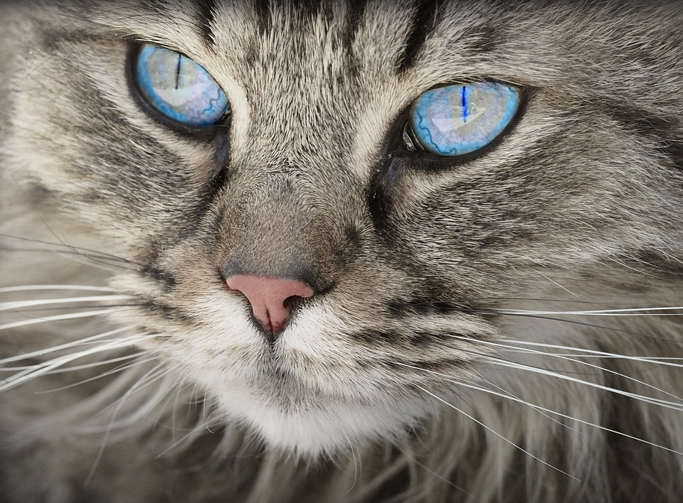
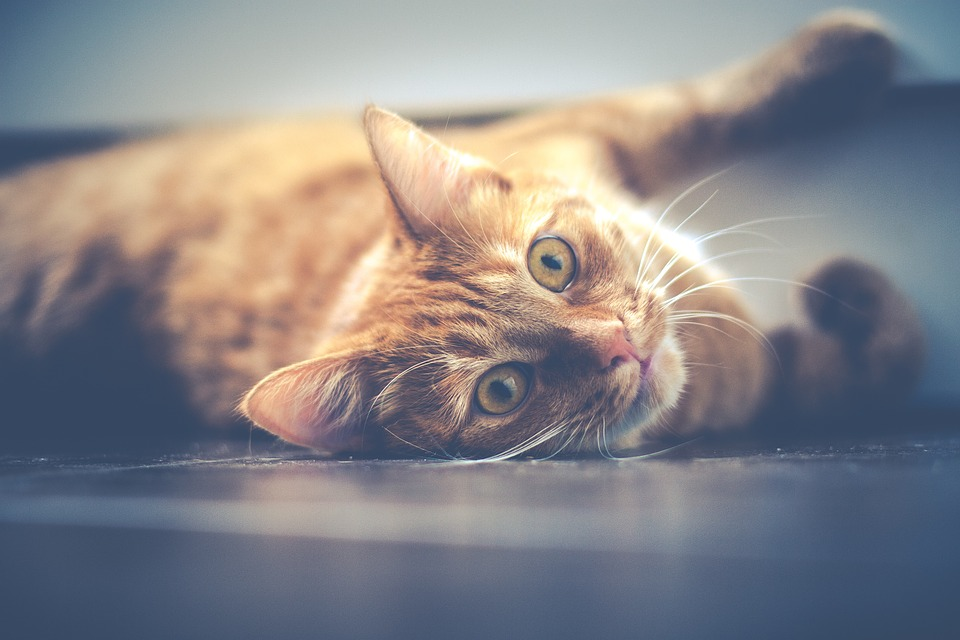
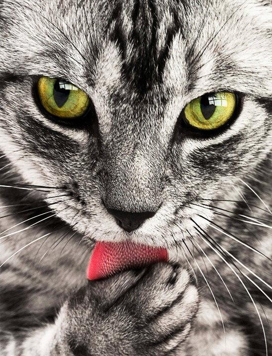
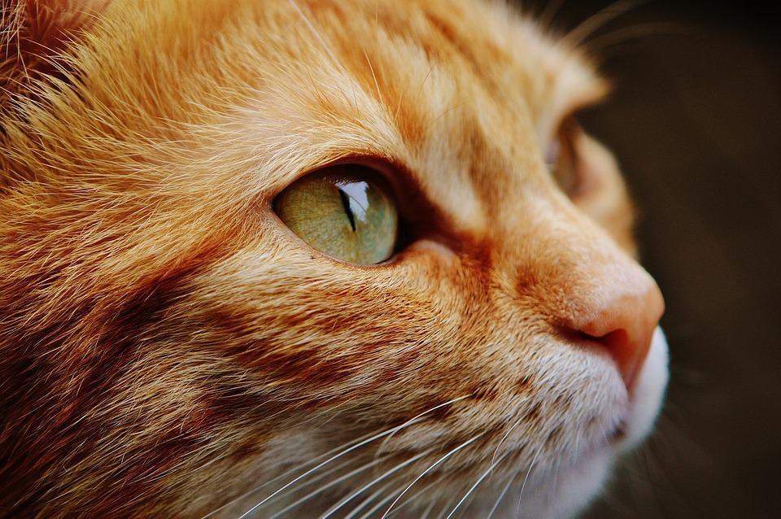
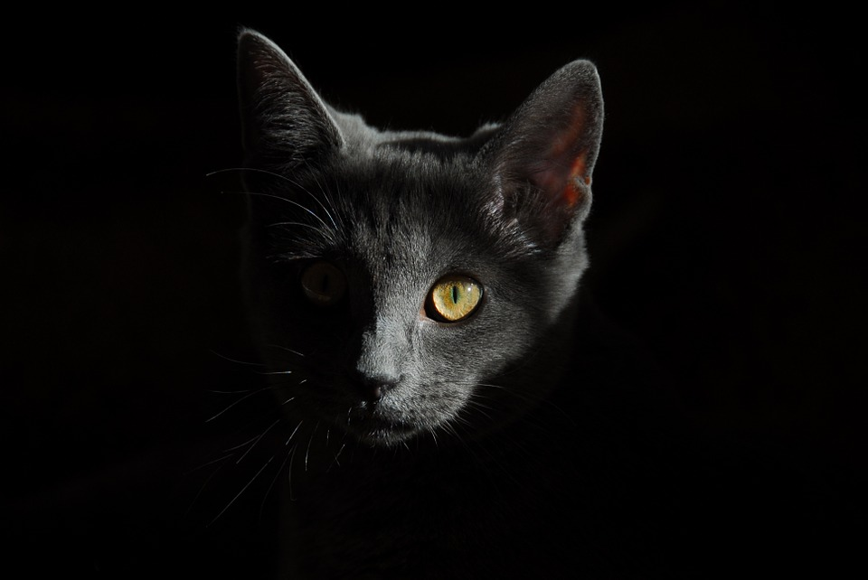
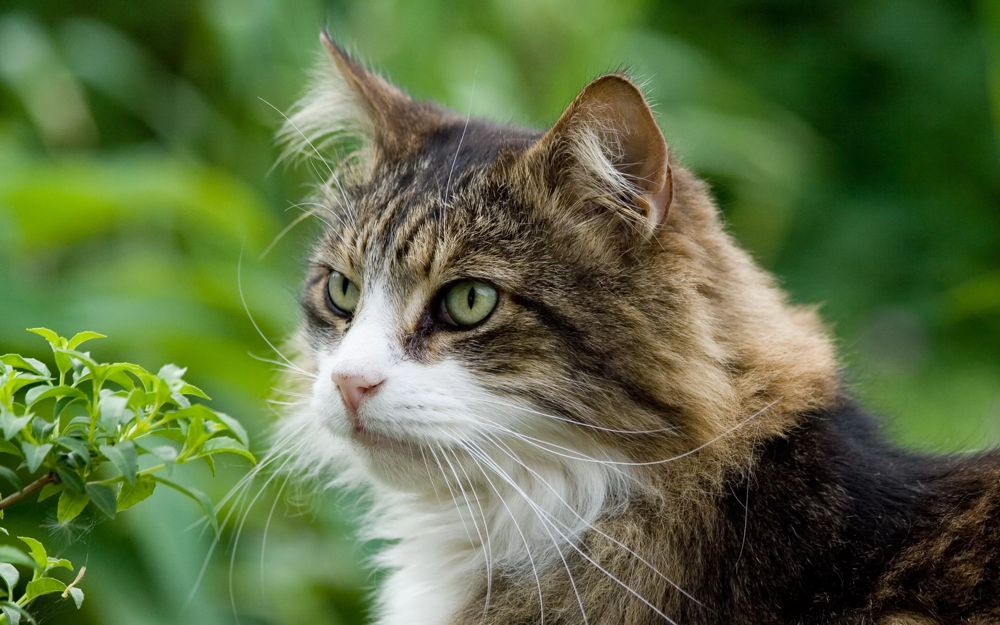

пушистое, мурлыкающее, ластящееся четвероногое – настоящий хищник, несмотря на свой милый и симпатичный внешний вид.
В обычных условиях кошки питаются мышами, мелкими птицами, особенно смелые представители кошачьего семейства нападают даже на крыс.
- Характеристики:
- две камеры 12 МП/12 МП, автофокус
- память 128 Гб
- питание: рыба, мясо
- вес 1.5 кг, ШxВxТ 74.10x557.60x70.80 мм
пушистое, мурлыкающее, ластящееся четвероногое – настоящий хищник, несмотря на свой милый и симпатичный внешний вид.
В обычных условиях кошки питаются мышами, мелкими птицами, особенно смелые представители кошачьего семейства нападают даже на крыс.
Описание: у домашней кошки округлая голова, короткая морда, с достаточно широкими челюстями и острыми хищными зубами. Глаза большие, уши прямостоячие. На языке расположены специальные сосочки, которые помогают в питье, еде и уходе за шерстью.
Шерсть самой разной длины, в зависимости от породы кошки. Животные короткошерстных пород кошек стройнее и активнее длинноволосых. У большинства кошек по 4 когтя на задних лапах и по 5 на передних. Когти на передних лапах обычно острее, чем на задних.Зрение бинокулярное с углом охвата в 200' (у человека только 180'). По остроте зрение кошки значительно превосходит человеческое.
Окрас: очень разнообразен и включает в себя широкий спектр цветов: черный, белый со многими оттенками красного, огненно-рыжего, коричневого и серого. Кошка
Каждая кошка обладает собственным уникальным характером, однако заводчики и хозяева мурлыкающих красавиц отмечают схожие черты в зависимости от породы и типа темперамента. Некоторые обращают внимание на знак зодиака, цвет шерсти и даже кличку животного. Вы наверняка когда-нибудь проходили психологические тесты или листали гороскопы, чтобы больше узнать о себе. А что насчет вашей котейки? Или, может быть, знание характеров кошек повлияет на выбор котенка?

Главная особенность психологии кошек – их независимость. Этих питомцев невозможно заставить подчиняться и выполнять команды. Гуляющие сами по себе, они будут делать только то, что хотят сами. Своенравие не является минусом усатых-полосатых, наоборот, любители кошек ценят их за это. Грациозность, изящество и мягкая походка «маленького тигра» веками вдохновляли художников, музыкантов и писателей. Не зря красивую эффектную женщину иногда сравнивают с кошкой.

Несмотря на свое свободолюбие, кошка способна искренне привязаться к человеку, и тем ценнее будет ее любовь. Коты способны чутко реагировать на перемены настроения хозяина и даже чувствовать его боль. Решившись завести в доме милого котенка, мы подсознательно стремимся соприкоснуться с дикой природой, ведь маленького хищника можно взять на руки и приласкать.
Котик в доме ассоциируется с уютом, благополучием и счастьем. Свернувшийся клубочком, мурчащий малыш заставляет отвлечься от мелких проблем и дарит ощущение тепла. Бывают и очень игривые, активные кошки, но их капризы не доставляют неудобств и воспринимаются как смешные мелкие шалости. Чтобы совместное проживание с котейкой было радостным и комфортным, ваши характеры должны быть совместимыми – всё как у людей!

Ответить на вопрос, какой характер кошки лучше, очень сложно, все зависит от того, что вам ближе. У каждой группы есть свои особенности, которые необходимо учитывать при выборе котенка. Кстати, именно для того, чтобы знать, чего ожидать от кошки в плане характера и поведения, лучше отдавать предпочтение породистым животным. Для каждой породы характерны определенные устоявшиеся специфические особенности поведения. Вероятность того, что поведение кошки будет соответствовать ожиданиям, будет выше у питомцев с родословной.

Кошки, чья характерная черта – чрезмерная общительность, просто обожают своих хозяев! Котофей может часами проводить время в кругу семьи, следить за всеми и поддерживать разговор задорным мяуканьем – настоящая «душа компании». Когда дома кто-то есть, кот не отходит от него ни на шаг, трется о ноги, лежит на руках, запрыгивает на плечо. В чем-то кошек данного типа даже можно назвать надоедливыми, кто-то считает их приставучими. Но тут важно, чтобы таких кошек брали в дом именно для общения, поскольку этим животным жизненно необходимо присутствие человека рядом. Они с трудом переживают одиночество, поэтому не подойдут чрезвычайно занятым людям, возвращающимся домой только спать. Кроме того, общительные кошки не выносят грубого обращения, они понимают только язык ласки.

Обратной стороной медали является ревность кошек. Они настолько сильно привязываются к хозяину, что не хотят его ни с кем делить – ни с другими питомцами, ни с членами семьи.
К группе «общительных и компанейских» относятся сиамская кошка, немецкий рекс, канадский сфинкс, ориентальная и бенгальская кошки.